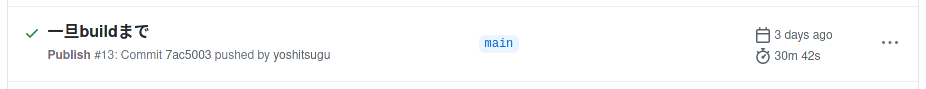

このブログのデプロイをTravis CIからGitHub Actionsにした
Posted on November 24, 2020
表題の通り、このブログのデプロイを Travis CI から GitHub Actions にしたので概要を書く。
従来のデプロイ構成
現在、このブログは GitHub Pages + Cloudflare CDN で運用している。ブログエンジン自体は Hakyll という Haskell 版 Jekyll のようなものを使用している。GitHub Pages として公開するために、従来はTravis CIを使用していた。
これは単純に GitHub Actions が存在する前からこのブログがあったため、当時のやりやすさで選択した。デプロイについては以前、 こちら や こちら で記事を書いた。
GitHub Actions への移行
Haskell で GitHub Actions する の記事を参考に、ビルドキャッシュされるようにして、GitHub Actions を記述した
name: Publish
on:
push:
branches: [main]
jobs:
publish:
runs-on: ubuntu-20.04
steps:
- uses: actions/checkout@v2
- name: Cache .stack
id: cache-stack
uses: actions/cache@v1
with:
path: ~/.stack
key: v1-stack-${{ hashFiles('**/stack.yaml.lock') }}
restore-keys: |
v1-stack-
- name: Cache .stack/pantry
id: cache-pantry
uses: actions/cache@v1
with:
path: ~/.stack-temp/pantry
key: v1-pantry-${{ hashFiles('**/stack.yaml.lock') }}
restore-keys: |
v1-pantry-
- name: Move .stack/pantry to temp
uses: matsubara0507/actions/move-files@master
with:
source_dir: ~/.stack-temp/pantry
source_files: |
pantry
target_dir: ~/.stack
- uses: actions/setup-haskell@v1.1.4
id: setup-haskell-cabal
name: Setup Haskell
with:
ghc-version: 8.6.5
cabal-version: 2.4.0.1
enable-stack: true
stack-version: "latest"
- name: Install sass
run: |
wget -O /opt/sass.tar.gz https://github.com/sass/dart-sass/releases/download/1.29.0/dart-sass-1.29.0-linux-x64.tar.gz
cd /opt
sudo tar xvf sass.tar.gz
sudo mv dart-sass/* /usr/local/bin/
cd -
- name: Install dependencies
run: stack --system-ghc build
- name: Build blog
run: |
stack --system-ghc exec -- blog clean
stack --system-ghc exec -- blog build
- name: Checkout blog branch
uses: actions/checkout@v2
with:
ref: blog
path: blog
- name: Move assets to blog branch
run: |
cp -r _site/* blog/
- name: Set git config
run: |
cd blog
git config --local user.email yoshitsugu@users.noreply.github.com
git config --local user.name yoshitsugu
git config pull.rebase false
- name: Commit and Push
run: |
cd blog
git add .
git diff --quiet && git diff --staged --quiet || git commit -am "Commit by GitHub Actions (triggered by ${GITHUB_SHA})"
git pull --prune
git push origin blogブログ記事の最終的な HTML や CSS,JS などは blog ブランチを用意して、その root に配置するようにした。現在 GitHub Pages では同一ブランチで、 /docs 以下に配置ということもできるようだが、ブランチをわけて管理したほうが手元に毎回 pull してこなくていい分ラクなように思えたからであり、そこまでちゃんとは考えていない。
また、サポートされなくなった Ruby Sass のかわりに Dart Sass を使うようにした。
実行時間
実行時間については、初回こそ 30 分近くかかるものの、キャッシュされてからは 1 分半ほどで完了している。
初回
キャッシュ後

まとめ
Travis CI から GitHub Actions に移行し、CI 状況も GitHub 上で確認できるようになり、実行時間も満足のいくものになった。